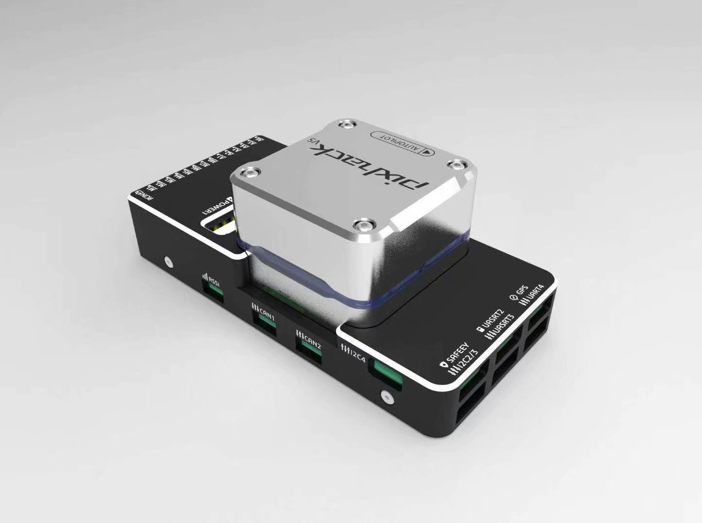
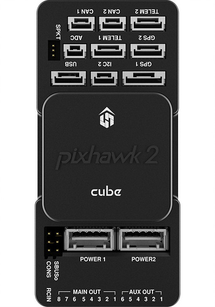

Traditional Helicopter — Connecting and Calibrating the System¶
This page covers how to make the physical connections between the autopilot, RC receiver, ESC and servos as well as calibrating the RC transmitter, Compass, Accelerometer, and ESC. The following video covers making the connections and setting up the transmitter to work with the autopilot.
Autopilot Info¶
{kind=link}
A autopilot with internally damped IMU’s is highly recommended for helicopters. Experience has shown the tuning, handling and stability performance of your helicopter will be greatly improved over the first generation autopilots, like the Pixhawk.
Before you begin connecting the system it is recommended to review the docs for the autopilot you select.
Overview of servo, and RX connection¶
The RC input for many ardupilot compatible autopilots is either PPM SUM (8 channels) or S.Bus (up to 18 channels). Some controllers also accept Spektrum satellite receivers. For receivers that only output PWM, a PPM encoder is required to connect to the autopilot, however this is not recommended for applications requiring minimum possible latency. For all helicopter frames, an RC radio that has at least 6 channels is required. For autopilots, traditional helicopter and quadheli frames require one that has at least 5 output channels. The dual helicopter frame requires the autopilot have at least 7 output channels.
The default receiver channel to ArduCopter RC input function mapping is as follows:
RC Receiver Channel |
ArduPilot RC Input Function |
1 (Aileron) |
Roll (note1) |
2 (Elevator) |
Pitch (note1) |
3 (Throttle) |
Collective(note1) |
4 (Rudder) |
Yaw (note1) |
5 (Gear) |
Flight Mode (note2) |
6 (Aux 1) |
Tuning |
7 (Aux 2) |
Aux |
8 (Aux 3) |
Motor Interlock (throttle) (note3) |
Note1: These functions are mapped by RCMAP_x parameters by default.
Note2: The FLTMODE_CH defaults to RC Channel 5.
Note3: The RC8_OPTION defaults to the Motor Interlock function.
The output on most controllers for SERVO’s 1 thru 8 are labeled Main Out:
{kind=link}
The autopilot output functions wiki shows the complete list of servo output functions. The default swashplate is H3-120 where Motor 1 (servo function 33) left front servo, goes to output 1; Motor 2 (output function 34), right front servo goes to output 2; and Motor 3 (output function 35), rear (elevator) servo goes to output 3. See the swashplate setup wiki for more details.
Tail Servo/Control¶
Tail servo is designated as Motor 4 (servo function 36) and is defaulted to output 4. Direct Drive Fixed Pitch (DDFP) tail rotors will also be connected to Motor 4 and the tail type parameter (H_TAIL_TYPE) set to DDFP. Direct Drive Variable Pitch (DDVP) tail rotors will use Motor 4 (defaulted to output 4) to control tail rotor pitch and the tail ESC (servo function 32) connection is defaulted to output 7. This is automatically configured as tail RSC for the servo 7 function when the tail type parameter (H_TAIL_TYPE) is set to DDVP.
Be sure to check the direction of operation of the Tail Servo. Move the rudder stick and notice the change in tail rotor pitch. Be sure that its increase or decrease of pitch is such that the change in thrust will result in the desired direction of movement. If not, reverse the servo direction with the SERVO4_REVERSED parameter.
Motor Control¶
The throttle servo or ESC for the main rotor motor is defaulted to output 8. This is automatically configured as Heli RSC (servo function 31) for the servo 8 function. See the rotor speed control setup wiki for more details on RSC setup. All traditional helicopter frames are required to use Motor Interlock. This feature adds an extra layer of safety when working with helicopters. Motor interlock enables the motor to drive the rotor/tailrotor. This is similar to throttle hold in RC helicopters. Motor interlock enabled (throttle hold off) means the motor is allowed to drive the rotor/tailrotor and the rotor speed control handles the rotor runup/shutdown. Motor interlock disabled (throttle hold on) means the motor is not allowed to drive the rotor/tailrotor. In order to arm the helicopter, the motor interlock must be disabled (throttle hold on). In ArduCopter 3.6 and earlier, the motor interlock and RC passthrough mode is tied to RC channel 8 only. The RC transmitter channel 8 must have the PWM within 10 pwm of the RC8_MIN for motor interlock disabled (throttle hold on). All other PWM values will set motor interlock enabled (throttle hold off). In ArduCopter 4.0, the RCn_Option parameter can be set to motor interlock for a user selectable channel. The transmitter channel on which the motor interlock is set requires the PWM to be low (<1200 PWM) for motor interlock disabled (throttle hold on) and above 1200 PWM for motor interlock enabled (throttle hold off).
Check the docs for your selected autopilot but most require a separate power supply to the servo rail to power your servos at their appropriate rated voltage.
Connect telemetry radios, GPS/compass module, power to autopilot itself, and any other peripherals as per the instructions in the owners manual for the unit.
RC Calibration¶
Warning
Before powering the autopilot and servo rail for the first time, disconnect the rudder linkage from the tail servo or bellcrank on the tail gearbox. If you have a piston engine helicopter, also disconnect the throttle servo linkage.
The RC MUST be calibrated before proceeding once the autopilot is powered up. RC calibration is identical to all other vehicles. With helicopters using the ArduPilot system there can be no mixes in the RC radio. All the outputs must be “pure”, i.e. use either airplane mode in your radio, or helicopter mode with H1 or “straight” swash. See this topic.
指南针校准¶
It is recommended to calibrate the compasses at this time as well. This is the same as all other vehicles. See this topic.
加速度计校准¶
If the accelerometers were not calibrated on the bench prior to installation it must be calibrated before proceeding.(It is usually easier to calibrate on the bench and then re-calibrate only the level position, if required, once installed.) See this topic.
电调校准¶
Warning
be sure to remove all blades when doing ESC calibration.
Some ESCs must be calibrated to the throttle range (ie HeliRSC output range, which defaults to 1000 to 2000us). In addition, it is often required to change ESC settings, such as enabling the governor mode and/or setting voltage protection levels.
In order to do this, you must be able to directly control the input to the ESC. By default the output function where it is attached is set to HeliRSC (SERVO8_FUNCTION = 31). In order to pass the throttle stick directly to the ESC for ESC programming per the ESC’s instructions, temporarily change this to SERVO8_FUNCTION = 53. Remember to change it back to “31”, after completing the ESC programming.
In addition, check to see that RC3_MIN and RC3_MAX match the MIN and MAX range of the HeliRSC output, which defaults to SERVO8 output (SERVO8_MIN, SERVO8_MAX), since passing through the throttle input will be direct and ignore those values, hich you are trying to match in the calibration. If not, temporarily change them to match and then return them to the values when RC校准 was done.